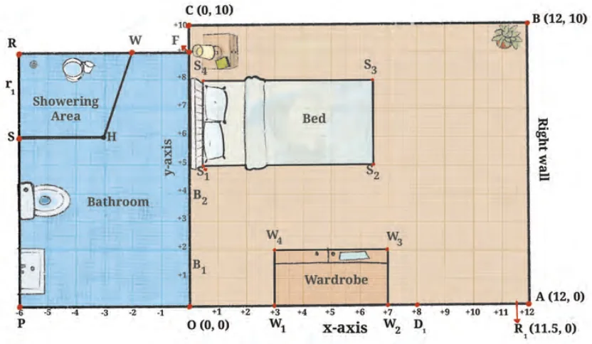

On a graph sheet, mark the x-axis and y-axis and the origin O. Mark points from \((-7, 0)\) to \((13, 0)\) on the x-axis and from \((0, -15)\) to \((0, 12)\) on the y-axis. (Use the scale 1 cm = 1 unit.) Using Fig. 1.5, answer the given questions.

- Place Reiaan's rectangular study table with three of its feet at the points (8, 9), (11, 9) and (11, 7).
- Where will the fourth foot of the table be?
- Is this a good spot for the table?
- What is the width of the table? The length? Can you make out the height of the table?
- If the bathroom door has a hinge at \(B_1\) and opens into the bedroom, will it hit the wardrobe? Are there any changes you would suggest if the door is made wider?
- Look at Reiaan's bathroom.
- What are the coordinates of the four corners O, F, R, and P of the bathroom?
- What is the shape of the showering area SHWR in Reiaan's bathroom? Write the coordinates of the four corners.
- Mark off a \(3 \text{ ft} \times 2 \text{ ft}\) space for the washbasin and a \(2 \text{ ft} \times 3 \text{ ft}\) space for the toilet. Write the coordinates of the corners of these spaces.
- Other rooms in the house:
- Reiaan's room door leads from the dining room which has the length 18 ft and width 15 ft. The length of the dining room extends from point P to point A. Sketch the dining room and mark the coordinates of its corners.
- Place a rectangular \(5 \text{ ft} \times 3 \text{ ft}\) dining table precisely in the centre of the dining room. Write down the coordinates of the feet of the table.